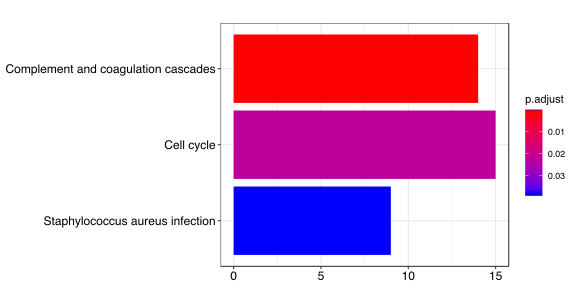
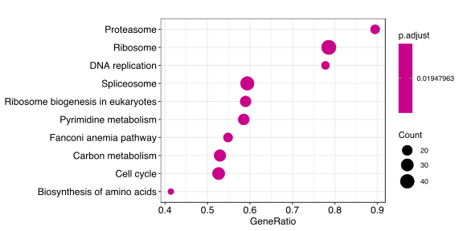
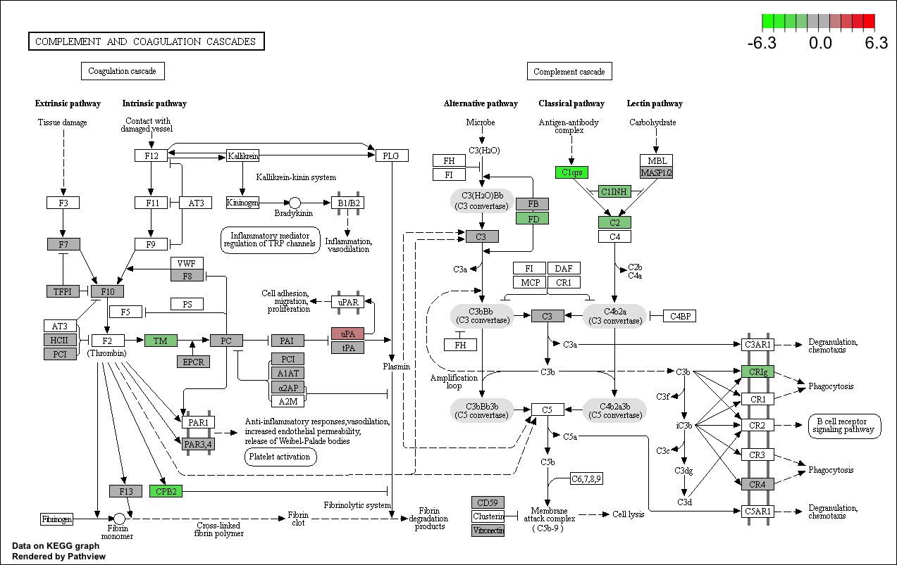

KEGG分析
应用场景
通路富集就是KEGG分析常规的应用

rt_FC_P数据结构如上图
rt_FC_P <- read.table(file = './P_FC.txt', header = TRUE,
row.names = 1, stringsAsFactors = FALSE)
#准备KEGG需要的数据
eg = bitr(row.names(rt_FC_P), fromType="SYMBOL", toType="ENTREZID", OrgDb="org.Hs.eg.db")
gene_list <- rt_FC_P$logFC[match(eg$SYMBOL, row.names(rt_FC_P), nomatch = 0)]
names(gene_list) <- eg$ENTREZID
gene_list <- gene_list[order(gene_list, decreasing = TRUE)]
gene <- names(gene_list)[abs(gene_list) > 1]
#计算gene和gene list富集通路
kk <- enrichKEGG(gene = gene, organism = 'hsa', pvalueCutoff = 0.05)
kk2 <- gseKEGG(geneList = gene_list, organism = 'hsa', pvalueCutoff = 0.05, verbose = FALSE)
#barplot展示通路富集基因数量和pvalue
barplot(kk, showCategory = 8)
#dotplot展示通路富集基因数量和pvalue
dotplot(kk2)
#看具体的通路上基因表达变化情况
library("pathview")
hsa04610 <- pathview(gene.data = gene_list,
pathway.id = "hsa04610",
species = "hsa",
limit = list(gene=max(abs(gene_list)), cpd=1))
  